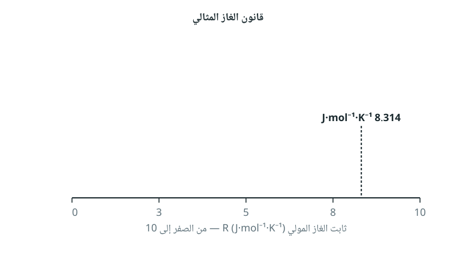

قانون الغاز المثالي
Ideal gas law
قانون الغاز المثالي يربط ضغط الغاز وحجمه وحرارته وكميته: pV = nRT. يُستعمل في حساب كثافة الغازات وحجوم التفاعل وتصميم الضواغط، ويصلح تقريباً للغازات الحقيقية عند الضغوط المنخفضة والحرارة العالية.
الغاز المثالي نموذج يفترض جزيئات صغيرة الحجم لا تتفاعل بينها إلا بالتصادم المرن. وفي هذا النموذج يتحقق pV = nRT، حيث p الضغط المطلق وV الحجم وn عدد المولات وR ثابت الغاز المولي وT الحرارة المطلقة. ومعناه أن ضغط الغاز يتناسب طردياً مع حرارته المطلقة وكثافته المولية. مثال: 2.00 mol من غاز في حجم 0.0500 m³ عند 300 K: p = nRT/V = 2.00 × 8.314 462 618 × 300/0.0500 = 99 774 Pa ≈ 0.998 bar.
كيف تعمل الظاهرة؟
ضغط الغاز ينشأ من تصادم الجزيئات بجدار الوعاء. وكل تصادم ينقل زخماً، ومجموع هذه النقلات على وحدة المساحة هو الضغط. فإذا رُفعت الحرارة زادت السرعة المتوسطة للجزيئات فزاد الزخم المنقول في كل تصادم وعدد التصادمات، فيرتفع الضغط. وإذا كبُر الحجم قلّ عدد التصادمات على وحدة المساحة فيقلّ الضغط. وهذا يفسّر التناسب الطردي مع T والعكسي مع V، ويجعل الثابت R مقياساً لطاقة كل مول لكل درجة.
العلاقة بالأرقام
pV = nRT، وp = ρRT/M حيث ρ الكثافة وM الكتلة المولية. مثال: 2.00 mol في 0.0500 m³ عند 300 K → p = 2.00 × 8.314 462 618 × 300/0.0500 = 99 774 Pa. وكثافة الهواء عند 101 325 Pa و288 K بكتلة مولية 0.02896 kg/mol: ρ = pM/(RT) = 101 325 × 0.02896/(8.314 462 618 × 288) = 1.225 kg/m³. والحجم المولي عند الظروف القياسية 273.15 K و101 325 Pa: V/n = RT/p = 8.314 462 618 × 273.15/101 325 = 0.022414 m³/mol = 22.414 L/mol.
مفاهيم متقاربة
يُفرَّق بين الغاز المثالي والحقيقي بمعامل الانضغاط Z = pV/(nRT): للمثالي Z = 1، وللحقيقي ينحرف فوق الواحد عند الضغوط العالية وتحته عند المتوسطة. ويُفرَّق بين قانون دالتون للخاليط وقانون الغاز المثالي: دالتون يوزع الضغط الكلي على المكونات. ويُفرَّق بين الحجم المولي والحجم النوعي: الأول لكل مول، والثاني لكل كيلوغرام. وأخيراً يُفرَّق بين الغاز والبخار: البخار قريب من التكاثف فينحرف كثيراً عن المثالية.
حدود التطبيق
النموذج يفترض جزيئات مهملة الحجم وبلا قوى بينها، وهو ما يتحقق عند الضغوط المنخفضة والحرارة العالية. وينحرف عند الضغوط العالية حيث يشغل حجم الجزيئات جزءاً معتبراً من الحجم الكلي، وعند الحرارة القريبة من التكاثف حيث تغلب قوى التجاذب. ولا يصف الغازات القطبية القوية كبخار الماء عند ضغوط متوسطة دون تصحيح. كذلك لا يُستعمل قرب النقطة الحرجة، حيث تتشابه خواص السائل والغاز.

| الكمية | القيمة | المصدر |
|---|---|---|
| ثابت الغاز المولي R | 8.314 462 618 J·mol⁻¹·K⁻¹ | [1] |
| ضغط 2.00 mol في 0.0500 m³ عند 300 K | 99 774 Pa | [1] |
المصادر
- 1 CODATA Value: molar gas constant — NIST — CODATA 2022 recommended values (2024). physics.nist.gov/cgi-bin/cuu/Value?r · اطُّلع عليه 2026-11-21
- 2 CODATA Value: Avogadro constant — NIST — CODATA 2022 recommended values (2024). physics.nist.gov/cgi-bin/cuu/Value?na · اطُّلع عليه 2026-11-21
- 3 The International System of Units (SI), 9th edition (2019) — BIPM — Bureau International des Poids et Mesures (2019). www.bipm.org/en/publications/si-brochure · اطُّلع عليه 2026-11-21
استشهد بهذا المصطلح
الصيغتان مبنيتان من بيانات الصفحة نفسها: العنوان والتاريخ ورابط النسخة المنشورة.
قانون الغاز المثالي — Ideal gas law. (2026). ديوان المعرفة — انفراد. https://infiradev.com/diwan/terms/term-ideal-gas-law.html
@misc{term-ideal-gas-law2026,
title = {قانون الغاز المثالي},
titleaddon = {Ideal gas law},
howpublished = {{ديوان المعرفة — انفراد} — مرجع علمي عربي},
year = {2026},
url = {https://infiradev.com/diwan/terms/term-ideal-gas-law.html},
urldate = {2026-11-26},
note = {مراجعة علمية: hermes (مراجعة معتمدة 2026-11-26)}
}
راجعه: hermes (مراجعة معتمدة 2026-11-26) · 2026-11-26 · آخر تحديث 2026-11-21